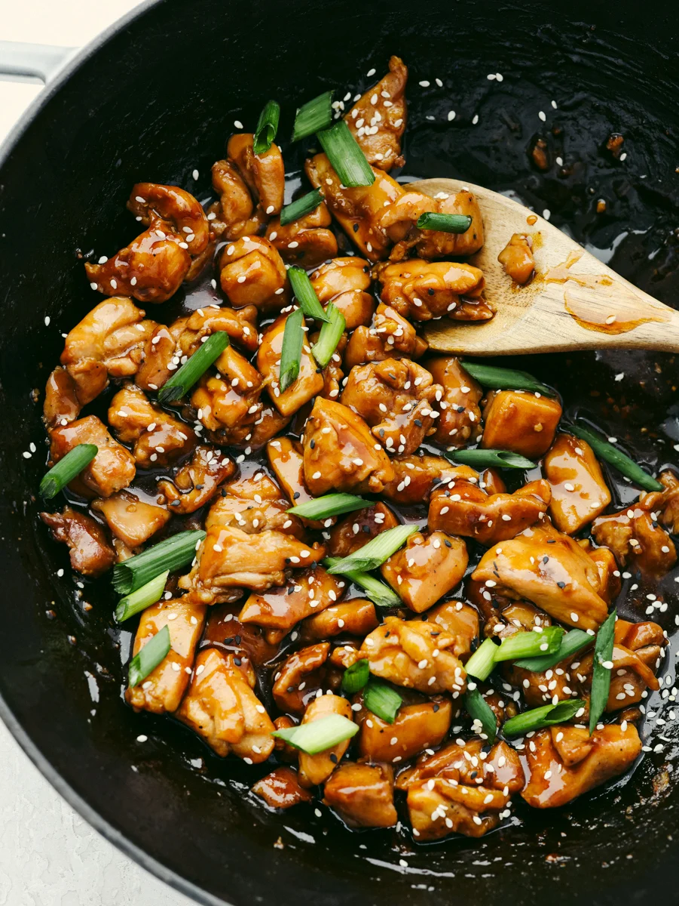
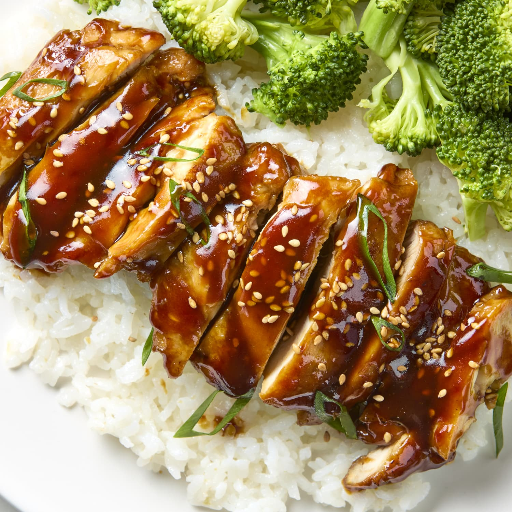
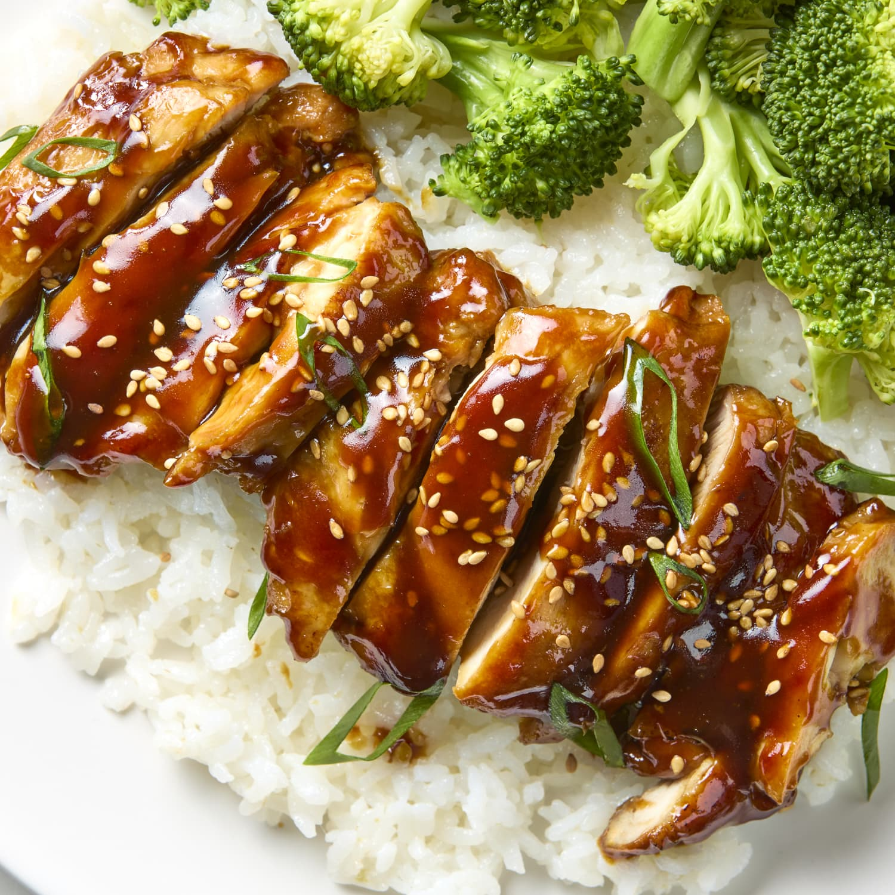
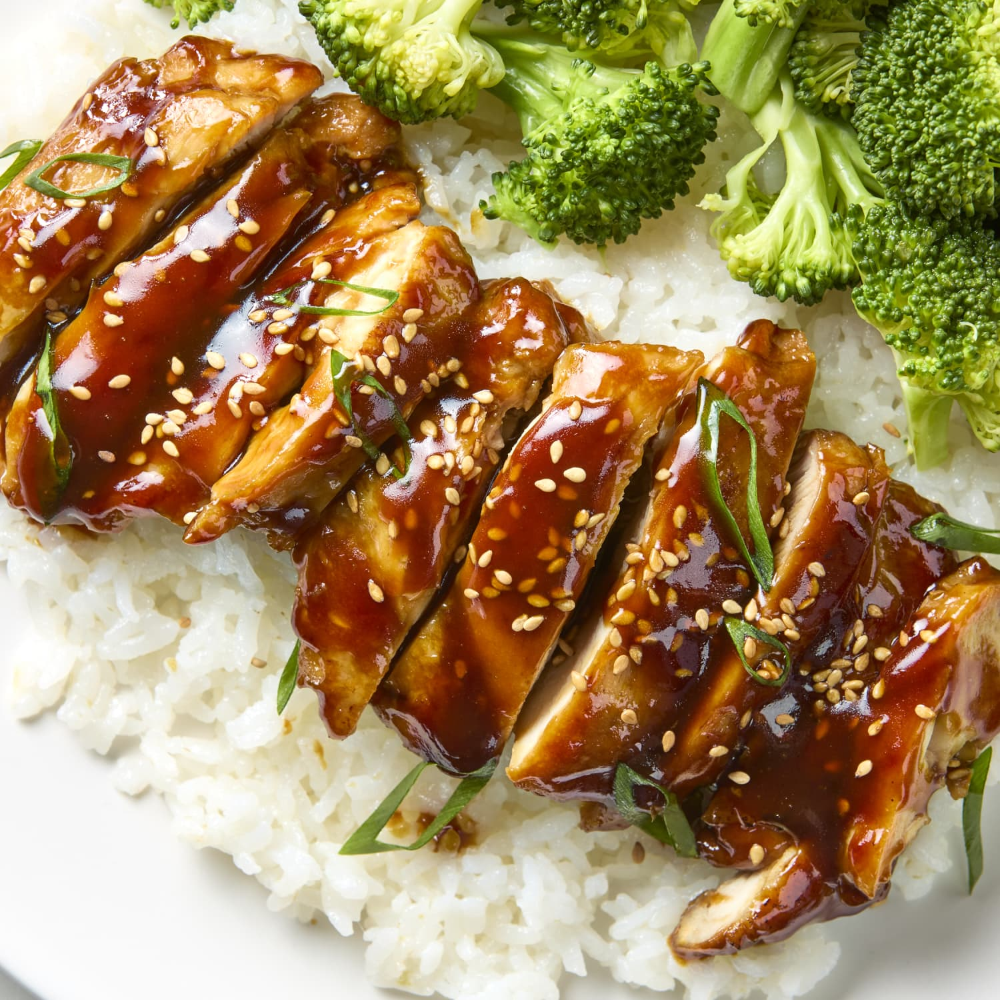

Teriyaki chicken is a popular Japanese dish that features tender, juicy chicken pieces coated in a
sweet and savory glaze. The key to the dish is the teriyaki sauce, which is made from a mixture of soy
sauce, mirin (a type of sweet rice wine), sugar, and sometimes ginger and garlic. The chicken is usually
grilled or pan-seared, allowing the sauce to caramelize and create a shiny, flavorful coating. The dish
is often served over steamed rice, accompanied by vegetables like broccoli or snap peas, and garnished
with sesame seeds or spring onions. The balance of sweet and salty flavors, combined with the rich umami
of the soy sauce, makes teriyaki chicken a crowd-pleaser and a staple in Japanese cuisine.
What do you need?
Now What do we do?
Prepare the Teriyaki Sauce:
In a small bowl, combine 1/4 cup of soy sauce, 1/4 cup of mirin (sweet rice wine),
and 2 tablespoons of sugar. For an added depth of flavor, you can include 1 teaspoon of
grated ginger and 1 clove of minced garlic.
Whisk the ingredients together until the sugar is fully dissolved. Set the sauce
aside to allow the flavors to meld.
Cook the Chicken:
Heat a tablespoon of vegetable oil in a large skillet or frying pan over medium heat.
Pat 4 boneless, skinless chicken thighs or breasts dry with paper towels. This helps the
chicken brown evenly.
Add the chicken pieces to the pan. Cook for about 5-7 minutes on each side, or until the
chicken is golden brown and has developed a nice sear. The chicken should be nearly cooked
through by this point.
Add the Sauce:
Once the chicken is golden brown, pour the prepared teriyaki sauce over the chicken
in the pan.
Reduce the heat to low and let the sauce simmer. Occasionally flip the chicken to
ensure it's evenly coated with the sauce.
Continue to cook until the sauce thickens and becomes a glossy glaze, about
5-10 minutes. The chicken should be cooked through and well-coated with the sauce.
Serve:
Remove the chicken from the pan and let it rest for a few minutes before slicing.
Serve the teriyaki chicken over a bed of steamed rice.
Garnish with a sprinkle of sesame seeds and chopped green onions for an
extra touch of flavor and presentation.
 
